Natior'Aro accompagne les communautés, les producteurs et les acteurs du développement rural à Madagascar dans la recherche et la mise en œuvre de solutions adaptées, durables et porteuses d'améliorations concrètes — en harmonie avec la nature.
« Apprendre, expérimenter, accompagner et construire avec les acteurs locaux. »
Natior'Aro est une association de droit malagasy créée le 1er juillet 2026 par dix (10) membres fondateurs. Nous mettons nos expériences, compétences et engagement au service d'un développement rural durable et résilient à Madagascar.
L'humain, l'agriculture et la préservation des ressources naturelles sont au cœur de notre action, avec l'agroécologie comme fil conducteur.
Contribuer à un développement rural concret et durable, où les exploitations agricoles familiales améliorent leurs conditions de vie tout en préservant les ressources de leur avenir.
Nous aspirons à :
Nous intervenons sur l'ensemble du territoire de Madagascar, avec une attention particulière pour les Hautes Terres et les régions du Sud. Nos actions s'adaptent aux réalités agroécologiques, économiques, sociales et culturelles de chaque territoire.
Accompagner les communautés, les producteurs et les acteurs du développement dans la recherche et la mise en œuvre de solutions adaptées, durables et porteuses d'améliorations concrètes.
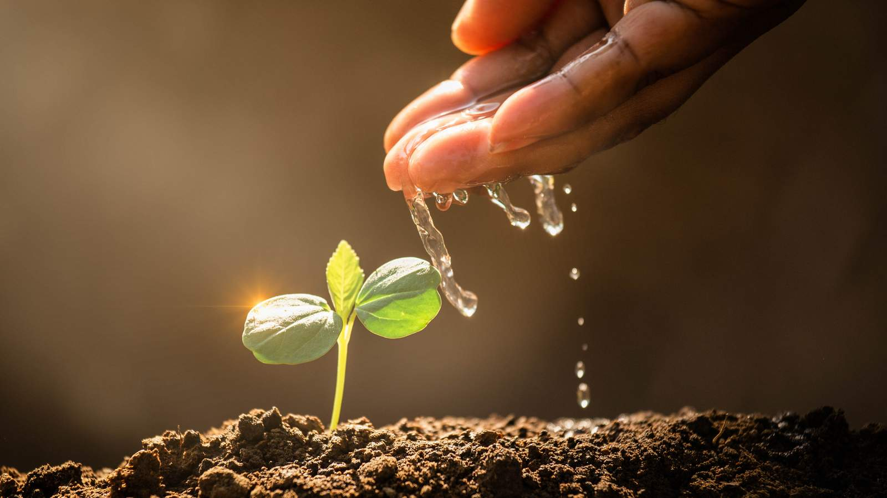
Pratiques agroécologiques, amélioration des systèmes de production, CEP, fermes pilotes, élevage familial, innovations et résilience climatique.
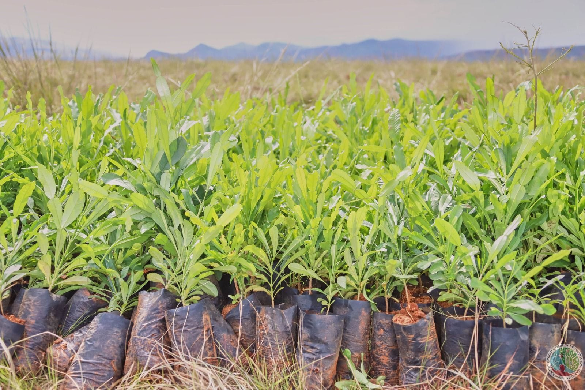
Reboisement, agroforesterie, gestion durable des sols et de l'eau, lutte contre l'érosion, biodiversité et mobilisation communautaire.
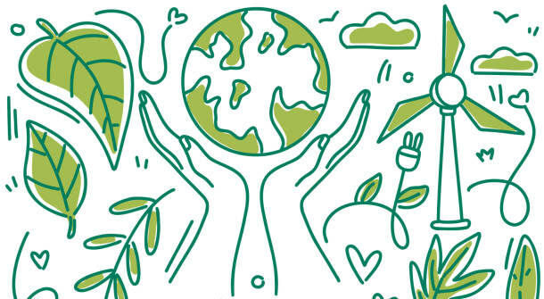
Diagnostics participatifs, identification des potentialités, appui aux dynamiques communautaires et planification locale.
Formation, appui aux relais locaux, échanges, visites d'apprentissage, appui aux organisations et accès aux services, équipements et innovations.
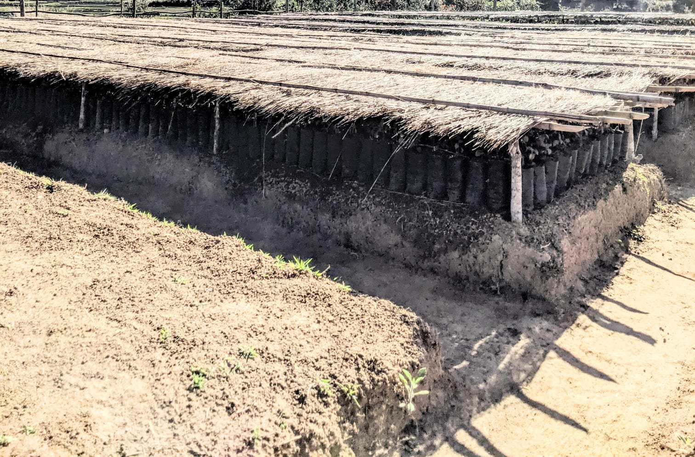
Diagnostics, études, missions d'appui-conseil, évaluations et expertises dans les domaines du développement rural, de l'agroécologie et des ressources naturelles.
Producteurs, organisations paysannes, femmes et jeunes ruraux, prestataires de services, ONG, projets et programmes, partenaires techniques et financiers, services techniques, collectivités, institutions de recherche et de formation, bureaux d'études et consultants.
Plus de 19 années d'expérience cumulée dans le développement rural et l'agroécologie : accompagnement, transition agroécologique, diagnostics, projets, renforcement des capacités, gestion durable des ressources naturelles et animation de démarches participatives.
Natior'Aro est ouverte aux partenariats avec les collectivités, services techniques, organisations paysannes, ONG, projets et programmes, institutions de recherche, bureaux d'études, consultants et partenaires techniques et financiers.
Convaincus qu'aucun développement rural durable ne se construit seul, nous privilégions des collaborations fondées sur la confiance, la complémentarité des compétences et le partage d'une même ambition : accompagner les communautés vers une agroécologie concrète, résiliente et porteuse d'avenir.
Vous partagez ces valeurs et souhaitez construire un partenariat avec Natior'Aro ? Contactez-nous →
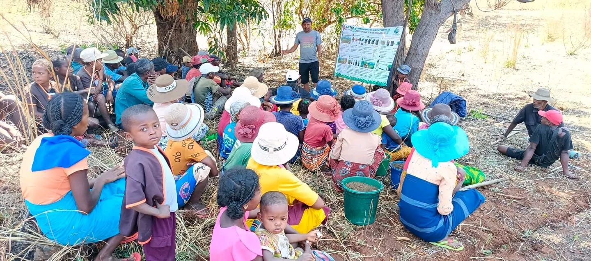
Sensibilisation des communautés autour d'un support illustré
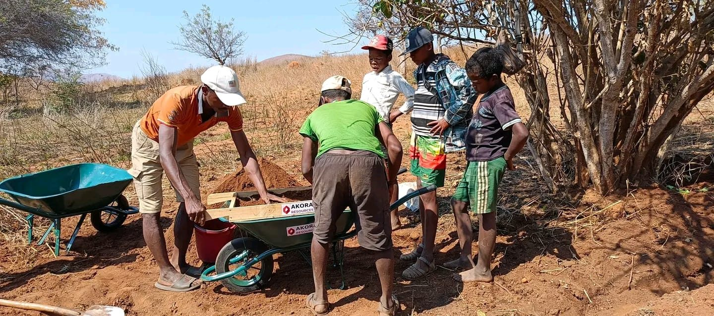
Préparation du substrat pour la pépinière
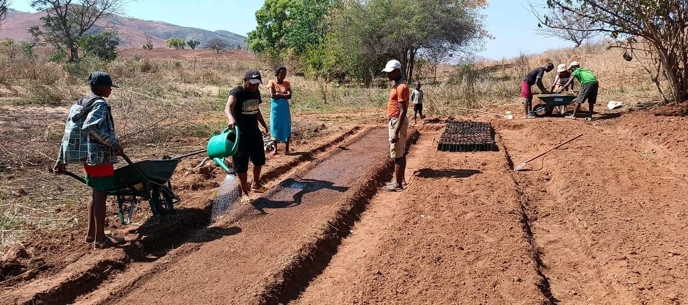
Arrosage des planches de la pépinière communautaire
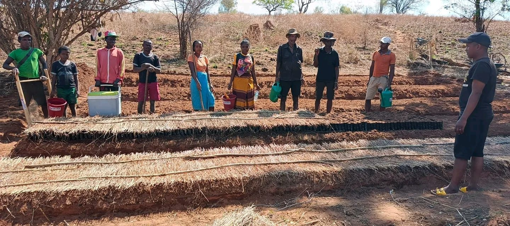
L'équipe communautaire devant la pépinière
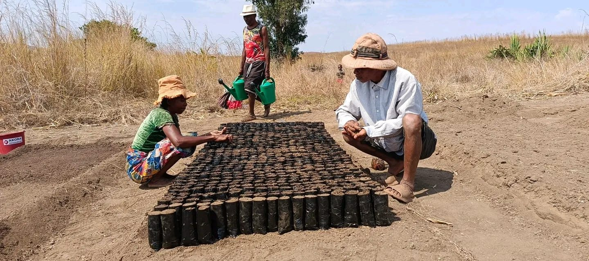
Mise en place des godets de plants
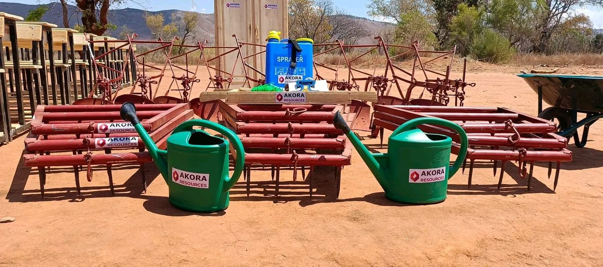
Outils et matériel agricoles mis à disposition
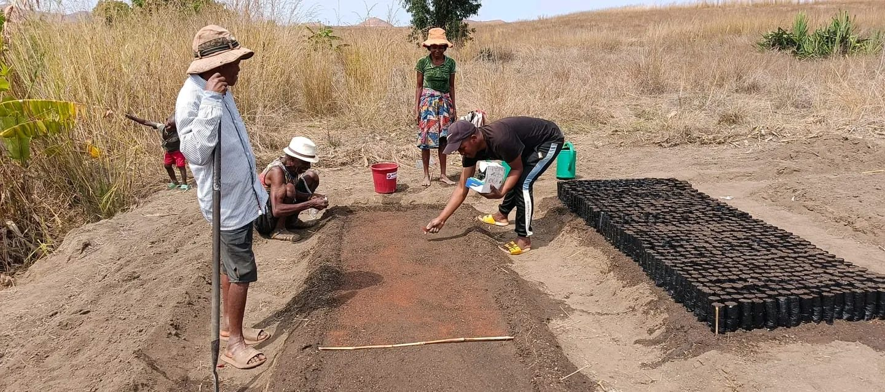
Semis sur planche préparée
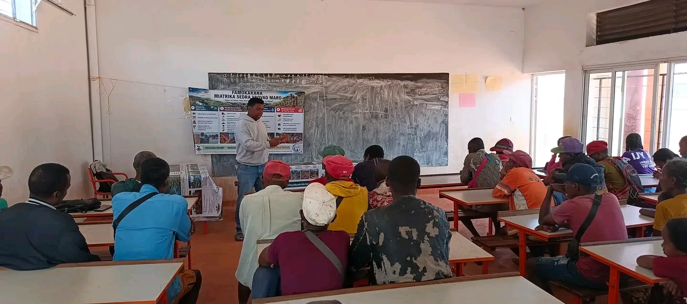
Formation et sensibilisation des producteurs sur le terrain
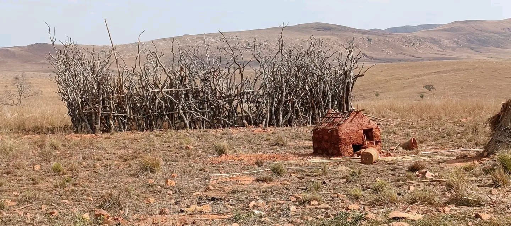
Ressources naturelles dégradées — Hautes Terres
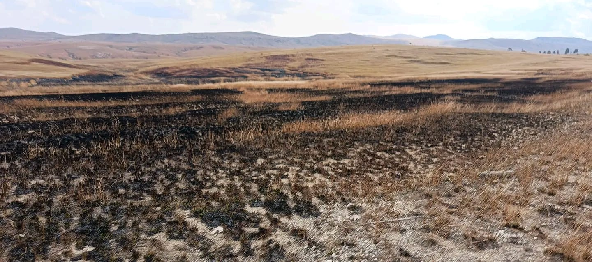
Terres brûlées par les feux de brousse
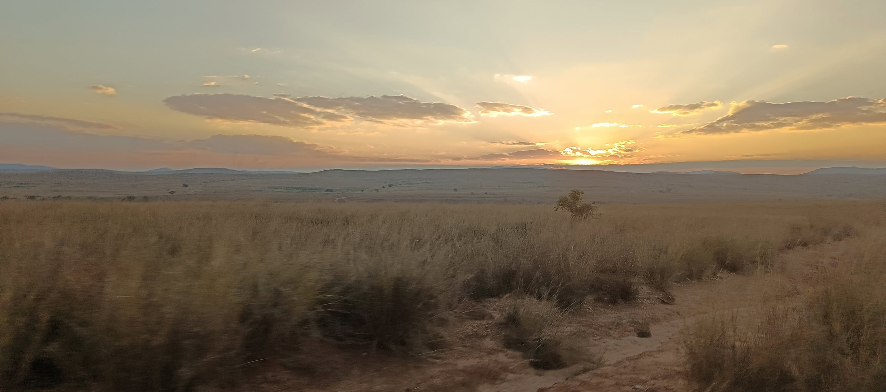
Paysage des Hautes Terres, zone d'intervention
Une question, une envie de rejoindre l'association, un partenariat ? Écrivez-nous.